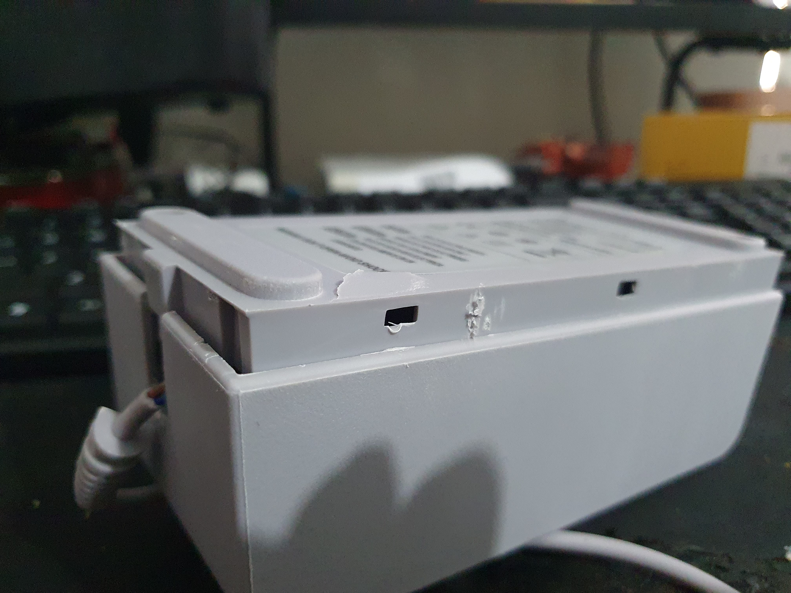
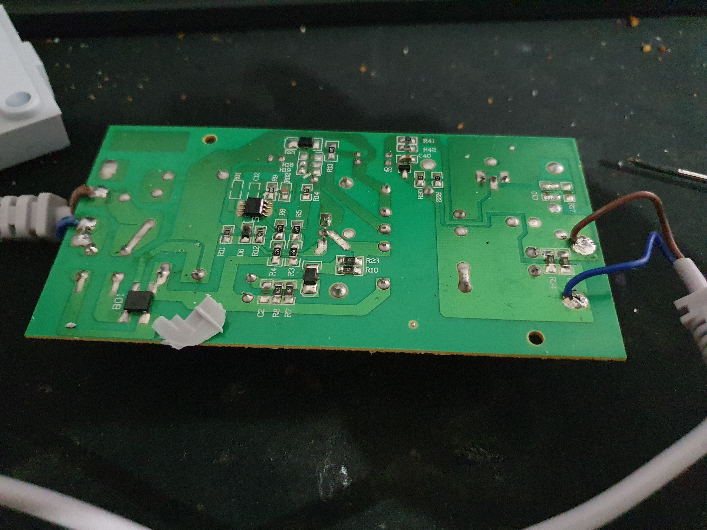
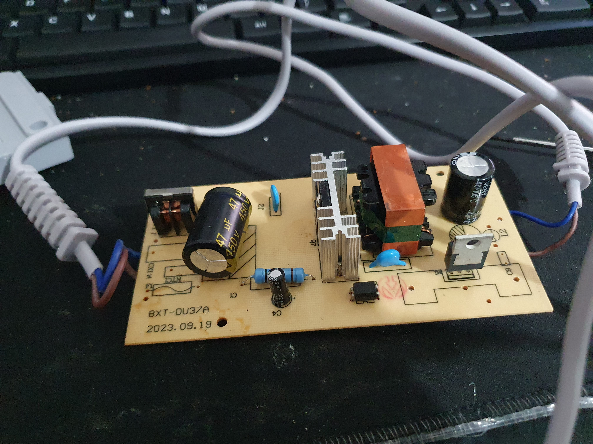

Why you should AVOID third-party power supplies.
Hey all and welcome to another blog post, this blog post will go more in-depth on a tiktok I uploaded, so here goes.
My Wii U’s power supply broke recently, some wired got frayed from wear & tear and so my caregivers took it for “safety reasons”, I then ordered a new power supply from a local game shop. I later learned that it was the same cord that was being sold on Aliexpress for $12
I got ripped off, I know. I decided to write this blog post to spread awareness on the dangers of third-party power supplies, ESPECIALLY ones from Aliexpress, eBay, temu. Etc.
Extremely prone to under/over volting
When I first bought the power supply, I noticed static on the Wii U’s video output; this should’ve been the first warning. Two days after the power supply arrived, I wanted to play Splatoon but noticed my Wii U gamepad got video: but not the TV. The video would occasionally flash on-screen but the minute I load a game it goes out completely. I later learned that this was happening because the power supply was already failing and as a result was giving a dodgy amount of voltage to my Wii U.
Low manufacturing quality
Soon after finding out the cause of my video issue, I unplugged the power supply and inspected the exterior, I immediately noticed how hollow the plastic shell sounded, almost as if there was nothing inside. When pushing the bottom of the case the plastic began to flex, indicating this thing was made from hopelessly weak plastic.
After seeing how hollow the plastic is, I wondered what was inside the case. So I decided to find out! Everything was held together with two Philips-head screws and a few plastic clips. I broke the hopelessly brittle plastic case in the process.
The pcb was extremely low-quality and wasn’t even secured inside the case! Containing a few cheap components that would make a good housefire-starter. The poor quality pcb will cause issues with power regulation, which could end up damaging your Wii U!
I’m not an electrician, but this is not something you should trust with your expensive video game system.
  
Conclusion
Obviously, you should not buy third-party power supplies, but where do we get a genuine replacement? It highly depends on your system and whether the manufacturer still provides tech support for it. Older systems like the Nintendo Wii are no longer supported, so your only hope would be to either salvage one from another console or buy a used power supply from a second-hand website. If your system is still supported, you may be able to pick up a genuine replacement from the manufacturer’s website, or a authorized retailer.
If you are in doubt: contact your manufacturer!